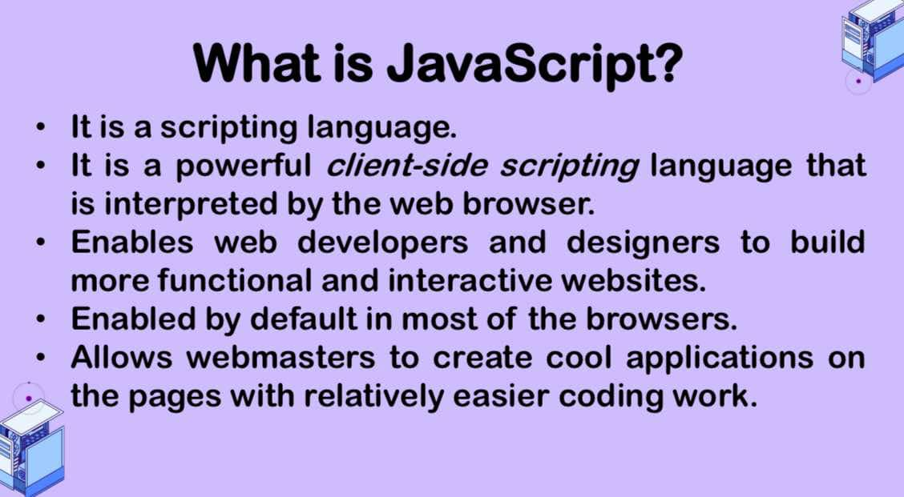

Hello there, why don't you listen to these cool tunes?
My favorite, Re-Arrange by Biffy Clyro
1ST QUARTER E-PORT
|
EVENTS
|
CONDITIONS, CONTROLS, LOOPS
|
||
|
SWITCH
|
LOOPS
|
||
|  |
JAVA SCRIPT
|
CSS
|
|
|
XHTML
|
STARTING JAVASCRIPT
|
This quarter has taught me various new techniques, tips, and alternatives in coding. I truly appreciate the ICT subject, even though it can be confusing at times, because the feeling of excitement and nervousness when I’m unsure if I can complete my webpage is truly thrilling. Learning to code has sparked my interest in improving my skills, and it even motivates me to consider pursuing a career that involves coding. I've enjoyed the lessons and am eager to continue learning. One area I aim to improve in is my approach to learning. Moving forward, I plan to dedicate more time to hands-on practice, as there have been moments when I couldn't finish my work on time due to a lack of understanding of the lesson.